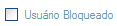
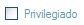

O Controle de Usuário é a funcionalidade que determina o perfil de cada usuário no sistema.
O cadastro do usuário (login e senha) é feito no cadastro de cliente.
Na tela de controle de usuários é possível:
Bloquear Usuário: Digitar o login do usuário e marcar a opção :Usuário Bloqueado 
Liberar permissão ao Usuário: Digitar o login do usuário e marcar a opção :
Priveligiado
Ao realizar as alterações no perfil do usuário, clicar no botão Salvar.